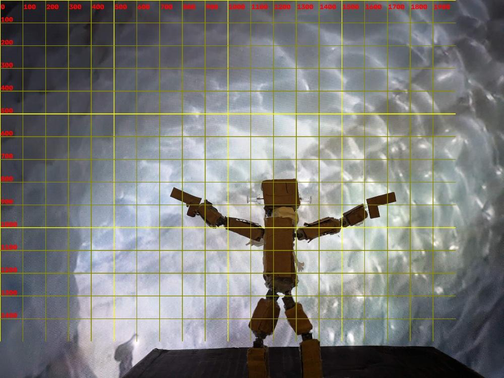
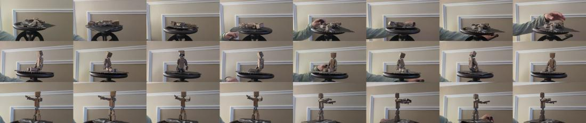
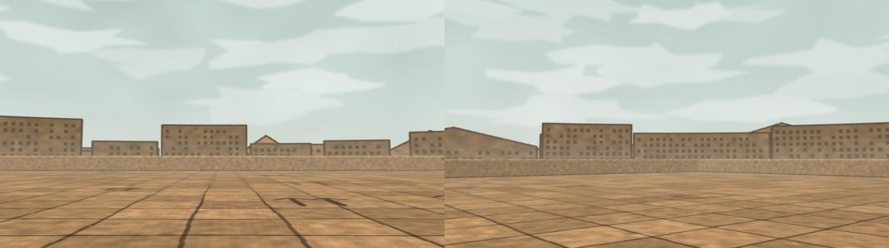
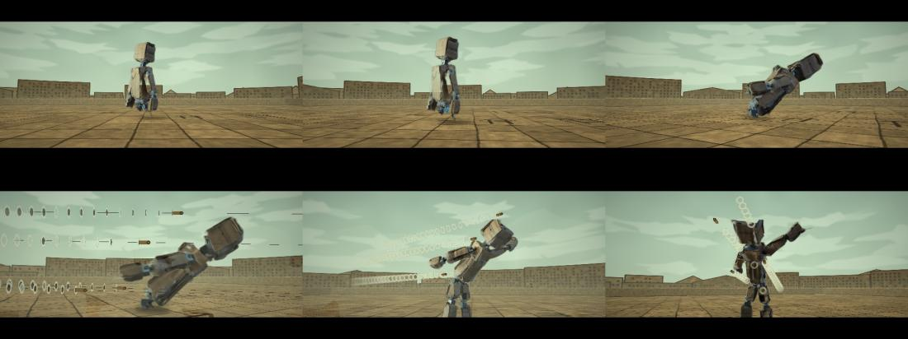
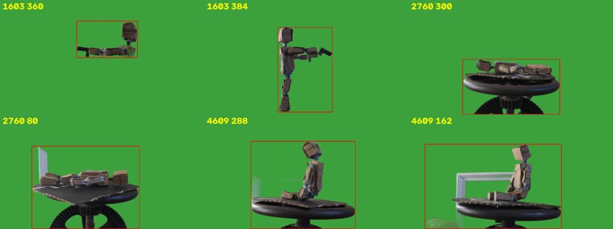
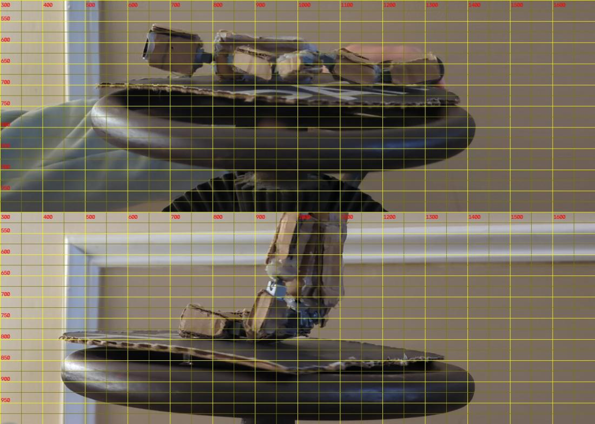
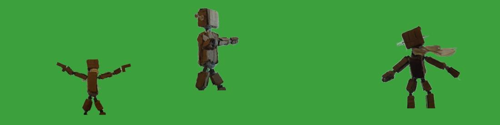
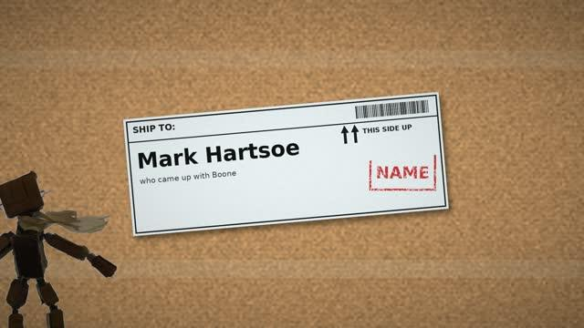
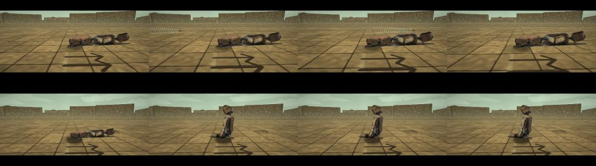
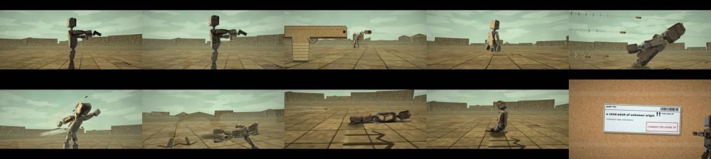

TSU-05 · case 6 of 11 · This Side Up
Tempus Fugit v3: Cardboard
Does the dodge still read when the roof, the skyline, the guns and the bullets are all cardboard?
Every effect made from the puppet's own material. 1 min 9 s.
How it was made
- Grid the turntable clips and cut Boone's poses.
- Build the cardboard world kit and the paper effects kit.
- Re-pace the lean: real time, ramp, then 0.55x.
- Shoot the other scenes as short clips: raise, fire, click, gun, fall, lying, sit.
- Credits as shipping labels.
What this case teaches
- When the effects share the puppet's material, the film reads as one made world.
- Visible fishing line answers how the bullet moves.
How it differs. v1 and the Marble lean were photographic. v3 is all cardboard.
Versions, in order
Every cut that was rendered, oldest first, with what changed from the one before. Videos are 640 px web encodes.
-
01
The lean, re-paced
Oct 18 14:46 · 0:16Real-time dodge until 23.5 s of the reference, then bullet time at 0.55x; the camera never closer than 2.4 m.
-
02
Tempus Fugit v3
Oct 18 15:05 · 1:09Raise, fire, click, the agent's gun, the lean, the fall, lying, sitting up, label credits.
The sheets, step by step
Grouped by stage of the work, with the time each file was written. Click any sheet to see it full size; the arrow keys move through them.












Show 4 more from this step








What broke and what changed
- Glowing tracers would be the only thing on screen not made of cardboard.Slugs on fishing line, construction-paper flashes, tissue smoke.
Read the record
Carried forward
The cardboard world, paper effects and label credits become shared kits.